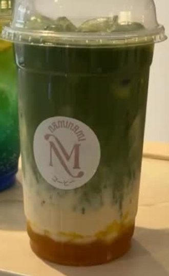
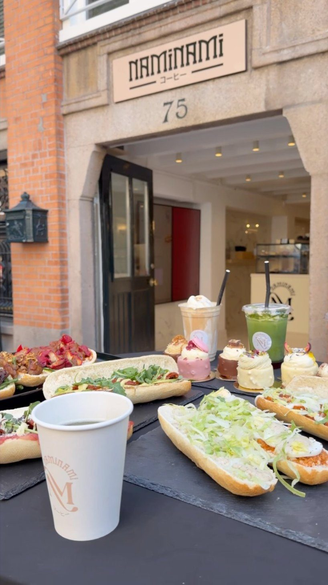
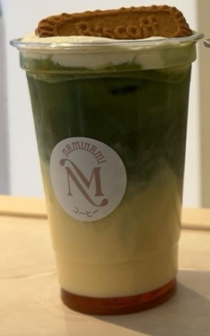
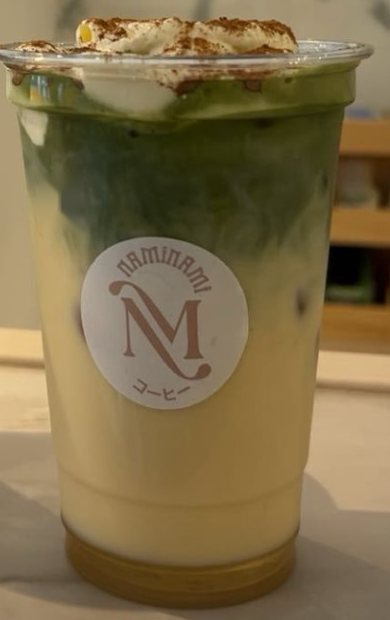
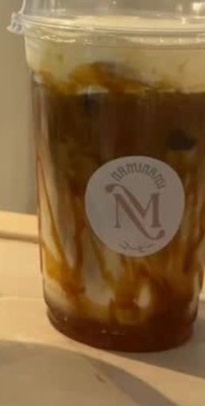
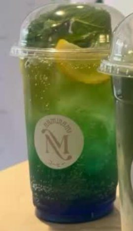

Mango matcha
Ijskoude matcha met mango
Verse sandwiches, romige matcha en koffie die je even laat stilstaan. Vind ons aan de Spuistraat en de Nieuwezijds Voorburgwal.


Ijskoude matcha met mango

Met een koekje bovenop

Zacht, romig en een tikje kaneel

Karamel, koffie en room

Fris, fruitig en met munt
Een kleine plek met een Japanse knipoog, waar koffie, matcha en vers brood samenkomen.
Spuistraat 75 / Nieuwezijds Voorburgwal 116, Amsterdam.
Alle locatiegegevens| Dag | Open | Keuken sluit |
|---|---|---|
| Maandag | Gesloten | – |
| Dinsdag | 09:00 – 19:00 | 18:00 |
| Woensdag | 09:00 – 19:00 | 18:00 |
| Donderdag | 09:00 – 20:00 | 19:00 |
| Vrijdag | 09:00 – 20:00 | 19:00 |
| Zaterdag | 09:00 – 20:00 | 19:00 |
| Zondag | 10:00 – 20:00 | 19:00 |
Zet een QR-code op elke tafel en aan de balie. Gasten scannen met hun telefoon en zien direct de actuele menukaart, zonder app en zonder papier. Verandert er een prijs of een smaak? Dan pas je het één keer aan.
Broodjes, gebak en drankjes voor groepen. Laat weten wat je nodig hebt en wij denken met je mee.
Catering aanvragen